3.2.1. Convolutional layers
Contents
3.2.1. Convolutional layers#
This layer creates a convolution kernel that is
convolvedwith the layer input to produce a tensor of outputs. It is well known for extracting features from images. Let me explain.
A short summary on Convolution and Cross Correlation#
Before we even try to understand what the above statement means, let us quickly go through the two important and simple mathematical operations namely Convolution and Cross Correlation which represents the heart of the convolutional layer.
Cross Correlation operation \(\otimes\)#
Suppose we input an arbitrary big matrix \(X\) and we have a smaller matrix \(K\) which we call as kernel (or filter) as shown in the figure below:
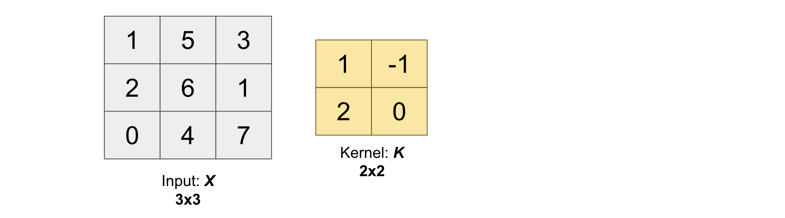
Then, the cross correlation operation between the input \(X\) and kernel \(K\) (\(X \otimes K\)) will produce an output matrix \(Z\) whose values are obtained by sliding the kernel \(K\) on top of the input \(X\) as shown in the below gif.
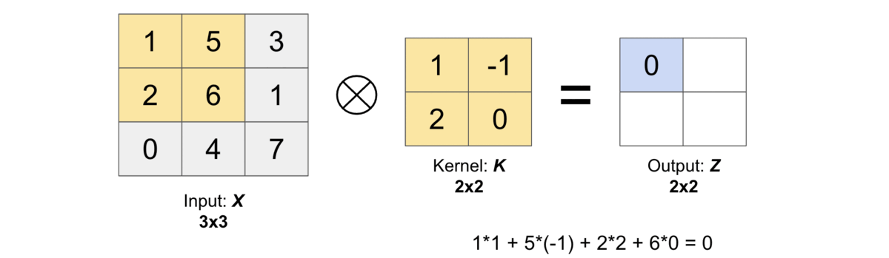
Let us compute the first output element and the rest of them can be computed in the similar fashion. In the below figure, the shaded portions are the first output element as well as the input and kernel elements used for the output computation:
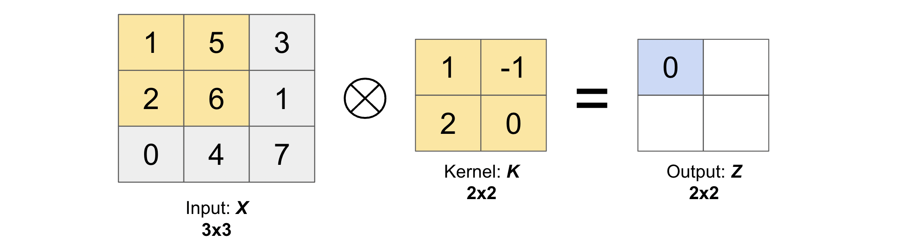
Convolution operation (\(\star\))#
The convolution operation between input \(X\) and kernel \(K\) (\(X \star K\)) is the same operation as cross correlation operation except that we have to rotate the kernel by 180 degrees to get a new kernel.
This rotation will result into the following output matrix \(Z\).
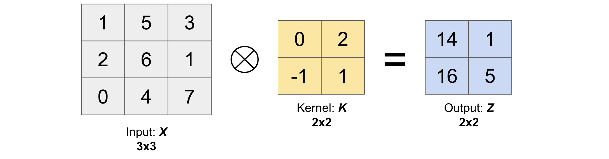
In other words, we have the following relation between convolution and cross-correlation operation.
Now, before we continue further, let us first define some basic operations such as the padding, stride and dilation.
Padding#
As we have seen in the cross correlation operation above, the pixels on the corner of the image (2D matrix) are less used than the pixels in the middle of the image which means that the information from the edges are not much used.
To solve this problem, we often add padding around the image in order to take the pixels on the edges into account. Generally we padde the matrix with zeros and use the variable \(p\) to denote the number of layers of zeros added to the border of the image (see figure below where we have padded the matrix \(X\), used earlier, with \(p=1\)).
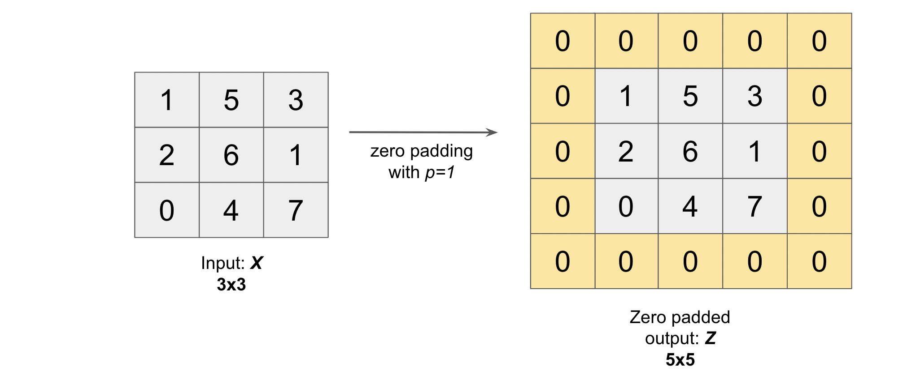
Note: After padding our \((N, M)\) image becomes \((N + 2p, M + 2p)\) image.
Mostly there are only 2 types of paddings used widely: One is valid and other is same.
valid means no padding. With this type of padding, there’s no “made-up” padding inputs. The layer only uses valid input data.
valid drops the right-most columns (or bottom-most rows) from the data.
same padding tries to pad evenly left and right columns, but if the amount of columns to be added is odd, it will add the extra column to the right (the same logic applies vertically: there may be an extra row of zeros at the bottom).
With same padding, if you use a stride of 1, the layer’s outputs will have the same spatial dimensions as its inputs.
Stride#
Stride simply denotes the number of pixels shifts while sliding the kernel \(K\) over the input matrix \(X\). By default it is one. We denote with \(s\) the stride parameter.
The following gif illustrates \(s=1\)
and the following gif illustrates \(s=2\)
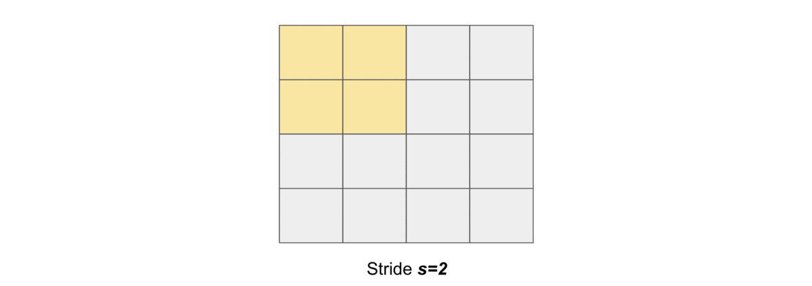
Dilation#
It is a method in which given a matrix \(X\) (for dilation), it is expanded (both horizontally and vertically) by inserting holes between its consecutive elements. In simple terms, we put rows and columns of zeros after every element of \(X\) (except the last one) based on the dilation rate \((D_h, D_w)\) along the height and the width of input respectively. Figure below will help you understand better (check dilated matrix for different values of the dilation rate).
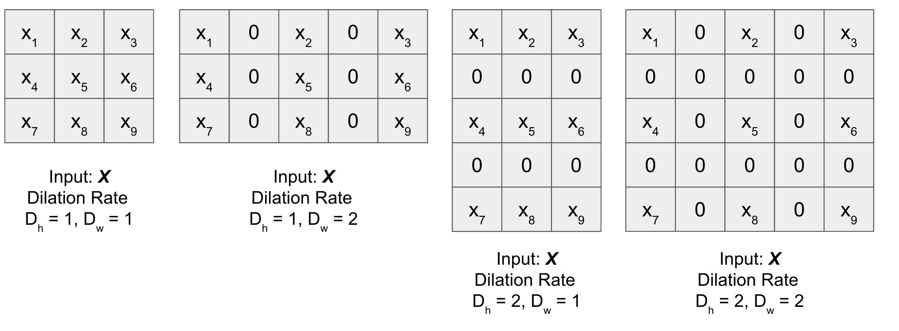
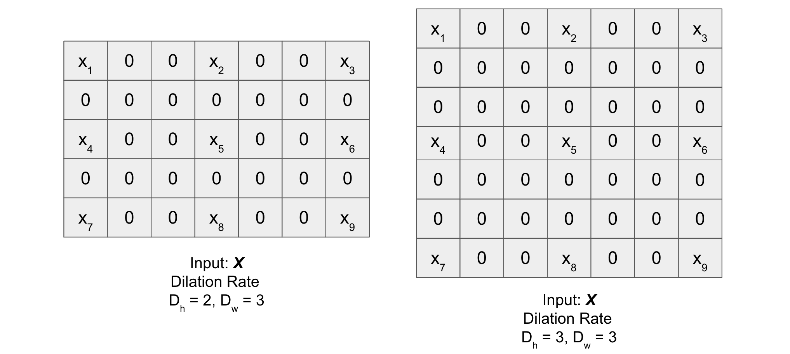
1D, 2D and 3D CNN#
1D CNN
In 1D CNN, kernel moves in 1 direction as shown in the figure below. Input and output data of 1D CNN is 2 dimensional. It is mostly used on Time-Series data.

2D CNN
In 2D CNN, the kernel slides along 2 dimensions on the data as shown in the following image. Input and output data of 2D CNN is 3 dimensional. Mostly used on Image data.
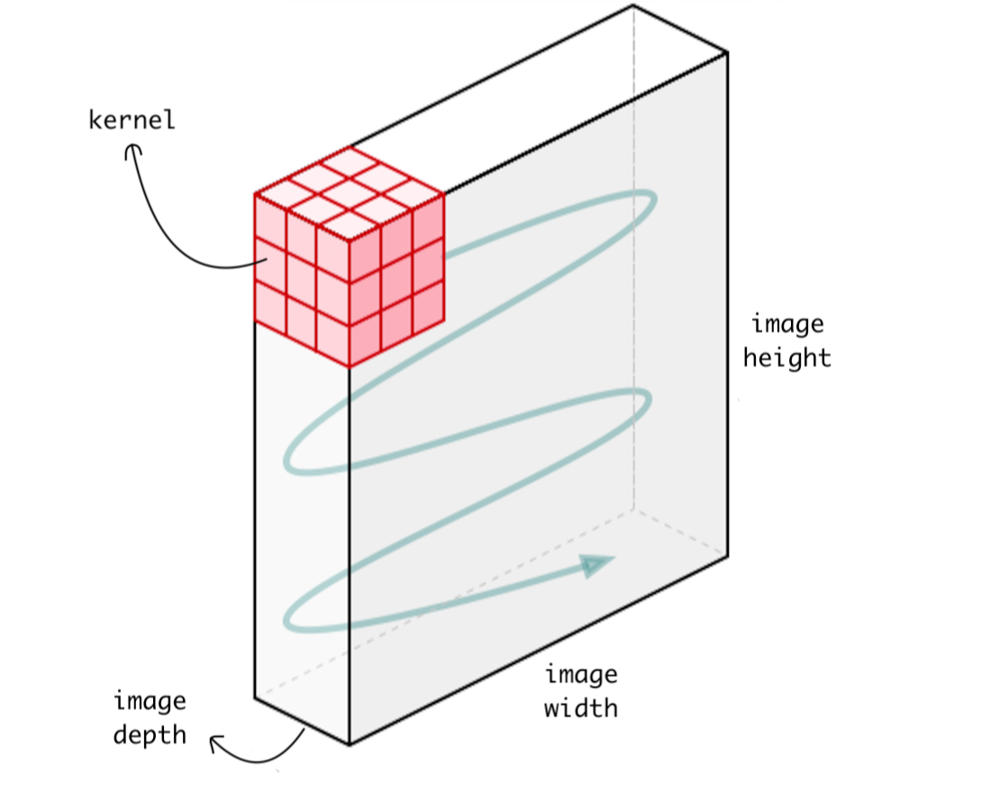
3D CNN
In 3D CNN, kernel moves in 3 directions (see figure below). Input and output data of 3D CNN is 4 dimensional. Mostly used on 3D Image data (MRI, CT Scans, Video).
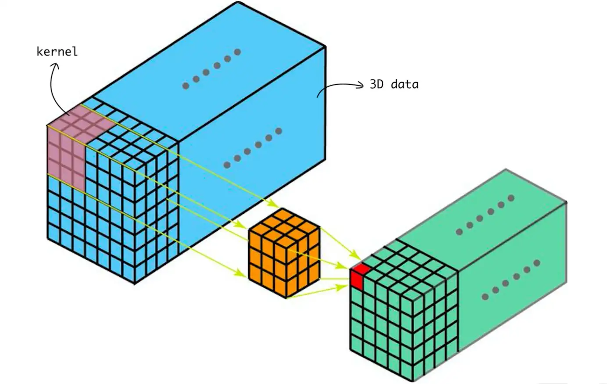
Notations#
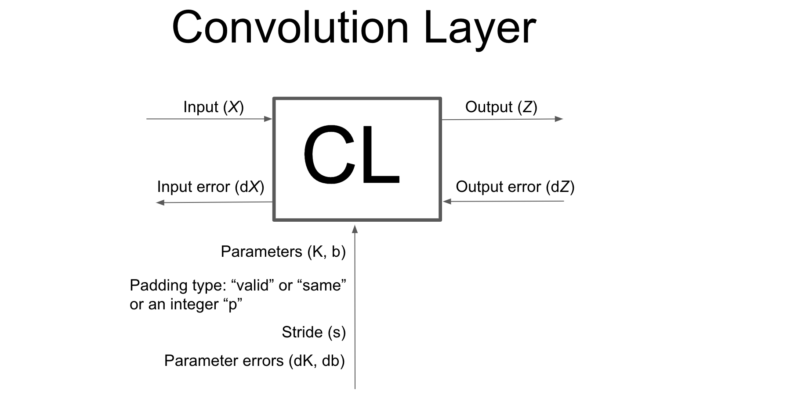
Input
Denoted by: \(X\) (mostly it will be an Image)
Shape: \((m, N_c, N_h, N_w)\)
\(m\) is the batch size
\(N_c\) is the number of channels (depth of the input)
\(N_h\) is the height of the input
\(N_w\) is the width of input
Parameters
Kernel
Denoted by: \(K\) (also called Kernel or Filter)
Shape: \((F, K_c, K_h, K_w)\)
\(F\) is the total number of filters
\(K_c\) is the depth of thw Kernel (it is equal to the depth of input or \(N_c\))
\(K_h\) is the height of the Kernel
\(K_w\) is the width of the Kernel
Bias
Denoted by: \(b\) (also called Bias)
Shape: \((F, O_h, O_w)\)
\(F\) is the total number of filters used in Kernel
\(O_h\) is the height of the Output \(Z\) (defined below)
\(O_w\) is the width of the Output \(Z\)
Padding
Denoted by: \(p\) (also called padding type)
\(p\) can be
str(“valid” or “same”)\(p\) can be
intas described above (for symmetrical padding)
Stride
Denoted by: \(s\) a tuple of the form \((s_h, s_w)\)
\(s_h\) is the number of strides along height
\(s_w\) is the number of strides along width
Output
Denoted by: \(Z\)
Shape: \((m, F, O_h, O_w)\)
\(m\) is the batch size
\(F\) is the total number of filters used in Kernel
\(O_h\) is the height of the Output \(Z\)
\(O_w\) is the width of the Output \(Z\)
Note
Instead of using \(p\) (for padding), we can also use \(p_h\) and \(p_w\) which denotes the number of rows and columns of zeros added to the input \(X\) respectively. We can further break \(p_h\) and \(p_w\) into \((p_t, p_b)\) and \((p_l, p_r)\) respectively where:
\(p_t\): number of rows of zeros padded on top of the input \(X\)
\(p_b\): number of rows of zeros padded on bottom of the input \(X\)
\(p_l\): number of columns of zeros padded on left of the input \(X\)
\(p_r\): number of columns of zeros padded on right of the input \(X\)
Shape of Output is calculated using the following formula:
Same padding
Valid padding
Forward Propagation#
Once we have defined the stride and the padding we can define the convolution product between a Input \(X\) (Containing channels, height and width) and a filter \(K\).
This we do across every batch and all the filters.
Don’t worry, in our forward propagation code, which we will develop from scratch in a step by step manner, we will not be using any for loops and the code will be fully vectorized (written in just few lines using only numpy)!